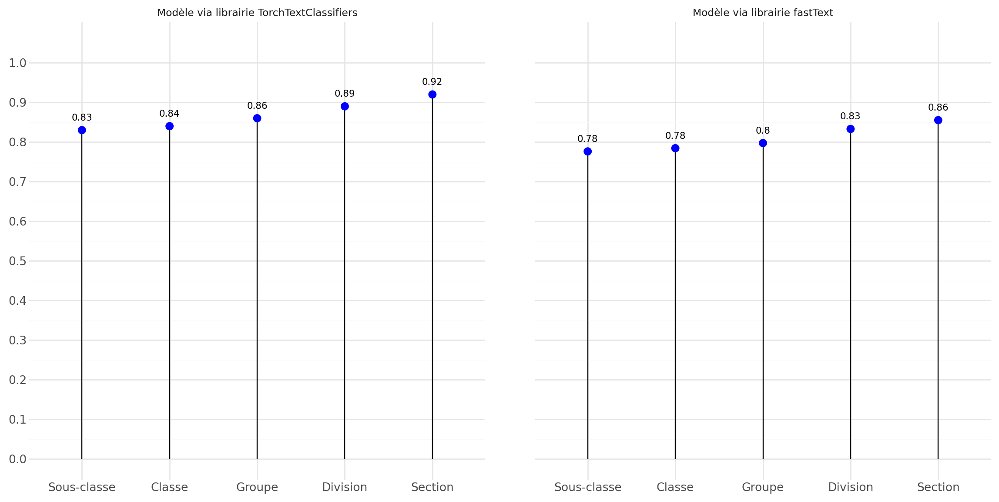

Les LLM au coeur du réentraînement d’un modèle d’apprentissage en nouvelle nomenclature
Journée méthodologie statistique 2025
25 novembre 2025
Sommaire
1️⃣ Introduction
2️⃣ Nouvelle nomenclature et données d’entraînement
3️⃣ Annotations humaines et virtuelles
4️⃣ Méthodologie
5️⃣ Résultats
6️⃣ Conclusion
7️⃣ Remerciements
1️⃣ Introduction
Contexte
- De plus en plus de modèle ML sont voués à être mis en production à l’Insee cf GUÉDÈS et MAUREL (2024)
- Multiples cas d’usages de codification : COICOP, NA2008, PCS2020, APE
- 🎯 Présentation axée sur l’Activité Principale Exercée (APE) des entreprises
- Révision de la Nomenclature d’Activités Française (NAF):
- Adaptation au nouveau paysage économique
- coordination avec la révision européenne de la NACE
- Des innovations d’autres INS sur la recodification par LLM notamment Iva Spakulova (2024)
- Concurrence forte et mondiale dans le secteur de l’IA générative: course au compute et aux données cf l’essai de Sutton (2019),
- Littérature abondante et en plein essor: Patrick Lewis (2020), RANA (2025), Connor Shorten (2024), Haoyu Huang (2025)
La source des données d’entreprises et des libellés d’activités
Loi PACTE
À partir du 1er janvier 2023, l’ensemble des formalités d’entreprise doit être déposé en ligne auprès d’un organisme unique.
INPI = Institut National de la Propriété Industrielle
- Office des brevets
- Opérateur du Guichet Unique des Entreprises (GUE)
Principal flux d’alimentation des déclarations du répertoire Sirene
Fin des Centre de Formalités des Entreprises (CFE)
➡️ description libre du libellé d’activité: texte non-structuréAfficher un exemple de libellé d’activité
Je souhaite développer dans le nettoyage et entretien des bureaux d'entreprise : changelent de poubelles , aspirateur, serpillère
Le répertoire Sirene
Sirene = Système Informatique pour le Répertoire des Entreprises et de leurs Établissements
- Répertoire de référence historique gérant le cycle de vie des entreprises
- garant du SIREN, SIRET et de l’APE basé sur la NAF
- Bascule de Sirene 3 à Sirene 4 ➡️ traitement en flux
- Sicore inefficient face au volume à traiter et particulièrement diversité des libellés
➡️ Mis en place d’un modèle d’apprentissage supervisé fin d’année 2022.
- évolution dans le temps des activités ou des descriptifs ➡️ dérive des données
- Cas extrême courant pour la statistique publique ➡️ changement de nomenclature
Malgré l’absence naturelle de données, comment entraîner notre modèle en NAF 2025 ?
2️⃣ Révision de la NAF et jeu d’apprentissage
NAF 2025 : les cas multivoques
- Au niveau 5 : 746 sous-classes contre 732 auparavant
- 181 classes multivoques, correspondance 1-pour-N ➡️ cas problématiques ! 🚩
- Besoin d’un expert pour déterminer le nouveau code

Combien représentent-ils ?
Jeu d’apprentissage issues de Sirene 4: \(~2.7\) millions d’observations
Peu en théorie
| Part de multivoques | Part d’univoques |
|---|---|
| 25 % | 75 % |
Beaucoup en pratique
| Part de multivoques | Part d’univoques |
|---|---|
| 52 % | 48 % |
➡️ \(~1.4\) millions de multivoques à recoder manuellement !
3️⃣ Annotations humaines et virtuelles
Campagnes d’annotation
Actions possibles: attribuer un code, déléguer la tâche ou classer comme incodables
- En NAF rev 2 ou NAF 2008: gold standard pour évaluer la précision
- 10 000 annotations pour valider la qualité dans la nomenclature actuelle
- Pôle Qualité Sirene ➡️ 6 annotateurs à l’aveugle, sans aide à la codification
- En NAF 2025: ground truth pour servir de référence
- 30 000 annotations sur les données multivoques uniques
- réseau complet des experts APE ➡️ environ 25 annotateurs
- avec proposition de codes multivoques en fonction du code en NAF rev 2
- 6 % de tâches déléguées
- 6 % de libellés inclassables
Concilier l’expertise et l’innovation

Dans quelle mesure, peut-on tirer profit des LLM ?
4️⃣ Méthodologie appliquée
Méthodologie
- 🎯 Objectif : Reconstruire un jeu d’entraînement le plus exhaustif possible
- 💡Principe : considérer les LLMs comme des annotateurs virtuels

Le prompting
Prompt système identique pour toutes les observations
Afficher le prompt sytème
Tu es un expert de la Nomenclature statistique des Activités économiques dans la Communauté Européenne (NACE). Tu es chargé de réaliser le changement de nomenclature. Ta mission consiste à attribuer un code NACE 2025 à une entreprise, en t'appuyant sur le descriptif de son activité et à partir d'une liste de codes proposés (identifiée à partir de son code NACE 2008 existant). Voici les instructions à suivre : 1. Analyse la description de l'activité principale de l'entreprise et le code NACE 2008 fourni par l'utilisateur. 2. À partir de la liste des codes NACE 2025 disponible, identifie la catégorie la plus appropriée qui correspond à l'activité principale de l'entreprise. 3. Retourne le code NACE 2025 au format JSON comme spécifié par l'utilisateur. Si la description de l'activité de l'entreprise n'est pas suffisamment précise pour identifier un code NACE 2025 adéquat, retourne `null` dans le JSON. 4. Évalue la cohérence entre le code NACE 2008 fourni et la description de l'activité de l'entreprise. Si le code NACE 2008 ne semble pas correspondre à cette description, retourne `False` dans le champ `nace08_valid` du JSON. Note que si tu arrives à classer la description de l'activité de l'entreprise dans un code NACE 2025, le champ `nace08_valid` devrait `True`, sinon il y a incohérence. 5. Réponds seulement avec le JSON complété aucune autres information ne doit être retourné.Un prompt spécifique pour chaque observation comprenant :
- le libellé de l’activité principale de l’entreprise
- l’ancien code NAF 2008 connu
- La liste des codes possibles issues du mapping avec leurs notes explicatives
Une instruction sur le format de réponse attendu
Importance du contexte

Illustration avec ChatGPT
Réponse formatée

Illustration avec ChatGPT
Réponse non formatée

Injection du contexte
 *
*
5️⃣ Résultats
Précisions par modèle
6️⃣ Conclusion
7️⃣ Remerciements
- Pôle Qualité Sirene
- Experts APE
- DNE
- SSP Lab
- RIAS
Références
Connor Shorten, Charles Pierse et al. 2024. « StructuredRAG: JSON Response Formatting with Large Language Models ». arXiv preprint arXiv:2408.11061, août. http://arxiv.org/abs/2408.11061.
GUÉDÈS, Dominique, et Françoise MAUREL. 2024. « Intégration des innovations de traitement de données dans la production statistique : état des lieux et perspectives ». Document interne.
Haoyu Huang, Yongfeng Huang et al. 2025. « Retrieval-Augmented Generation with Hierarchical Knowledge ». arXiv preprint arXiv:2503.10150, mars. http://arxiv.org/abs/2503.10150.
Iva Spakulova, Philip Lee. 2024. « ClassifAI – Exploring the use of Large Language Models (LLMs) to assign free text to commonly used classifications », juillet. https://datasciencecampus.ons.gov.uk/classifai-exploring-the-use-of-large-language-models-llms-to-assign-free-text-to-commonly-used-classifications/.
Patrick Lewis, Aleksandra Piktus et al., Ethan Perez. 2020. « Retrieval-Augmented Generation for Knowledge-Intensive NLP Tasks ». arXiv preprint arXiv:2005.11401, mai. http://arxiv.org/abs/2005.11401.
RANA, Anurag. 2025. « RAG (Retrieval-Augmented Generation) vs CAG (Context-Augmented Generation) ». Medium. janvier 2025. https://medium.com/@anuragrana.anu/rag-retrieval-augmented-generation-vs-cag-context-augmented-generation-f789ea24a168.
Sutton, Rich. 2019. « The Bitter Lesson », mars. http://www.incompleteideas.net/IncIdeas/BitterLesson.html.